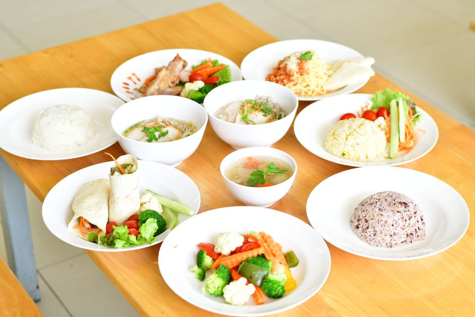
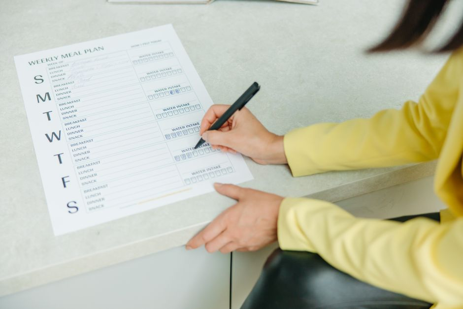

Comment préparer des repas rapides et économiques pour étudiant

Photo: Kritsana (Kid) Takhai / Pexels
Préparation de repas rapides et économiques pour étudiant : Des stratégies concrètes
Pour les étudiants, le temps et l'argent sont souvent des ressources précieuses. Préparer des repas rapides et économiques peut sembler compliqué, mais avec quelques astuces et une planification adéquate, vous pouvez manger sainement tout en restant dans le budget. Voici comment optimiser votre temps et votre budget pour préparer des repas sains et abordables.
Établir un menu hebdomadaire

Photo: Yaroslav Shuraev / Pexels
Planifier un menu hebdomadaire est une étape cruciale pour vous assurer que vous avez toujours des repas préparés et que vous n'achetez pas trop de provisions. Prenez une heure par semaine pour planifier vos repas, en tenant compte de vos activités et de vos horaires. Par exemple, si vous prévoyez de manger du poulet rôti à la maison le jeudi, notez-le dans votre planning. Cela vous permettra de acheter le poulet en avance et de l'acheter en quantité plus importante pour économiser.
Achats en vrac
Acheter des ingrédients en vrac peut vous aider à réduire vos coûts. Optez pour des produits en vrac dans les supermarchés bio ou les magasins de détail. Par exemple, achetez 500 grammes de riz basmati pour un peu moins de 1,50 euro, ce qui vous permet de préparer plusieurs repas au cours de la semaine. Ajoutez des légumes frais en vrac et des légumineuses (comme les lentilles ou les haricots) qui se conservent longtemps et coûtent peu.
Utilisation d'un programme de cuisson à l'avance
Le principe d'un programme de cuisson à l'avance est de préparer plusieurs repas une fois par semaine. Cela peut vous épargner beaucoup de temps et d'argent à long terme. Par exemple, préparez 2 litres de soupe de lentilles rouge avec des carottes, des oignons et des poireaux. Vous pouvez la congeler en portions de 500 grammes et la déguster tout au long de la semaine. Cela vous coûte environ 4 euros pour la préparation, soit 0,80 euro par repas. Comparez cela à l'achat de soupe prête à la consommation, qui coûterait généralement 1,50 euro par canette.
Utilisation d'épices pour diversifier les plats
Les épices peuvent ajouter une dimension de saveur aux repas les plus simples. Achat de 50 grammes de coriandre, de 50 grammes de cumin et de 50 grammes de curry peut vous permettre de préparer plusieurs repas diversifiés. Par exemple, vous pouvez utiliser la coriandre dans un riz safrané, le cumin pour des falafels et le curry pour une curry de poulet.
Repas à base de féculents
Les féculents comme le riz, le quinoa et les pommes de terre peuvent servir de base pour de nombreux repas. Préparez un grand plat de riz et utilisez-le dans de nombreux plats tout au long de la semaine. Par exemple, le lundi, préparez un riz au curry; le mardi, vous pouvez l'utiliser pour des riz et légumes vapeur; le mercredi, utilisez-le dans un riz et poulet; et ainsi de suite. Cela vous permet de réduire la quantité d'énergie nécessaire pour cuire le riz.
Utilisation du micro-ondes
Le micro-ondes est un grand allié pour préparer des repas rapidement. Évitez d'utiliser le micro-ondes pour les repas de base, mais utilisez-le pour les garnitures et les sauces. Par exemple, préparez une sauce tomate dans un bol, versez-la sur les pâtes, et faites chauffer 2 minutes au micro-ondes. Cela vous permet de préparer un repas en quelques minutes, tout en utilisant peu d'énergie.
Réalisation de sandwichs et wraps
Les sandwichs et wraps peuvent être des options rapides et économiques pour le déjeuner. Préparez-les la veille en mettant ensemble des ingrédients comme des garnitures à la viande ou des légumes, du fromage et des légumes verts. Enveloppez-les dans du papier d'aluminium et gardez-les au réfrigérateur jusqu'au moment du repas. Vous pouvez les congeler pour les jours où vous avez moins de temps. Par exemple, préparez 8 sandwichs de poulet et avocat, ce qui vous coûte environ 12 euros, soit 1,50 euro par sandwich.
Conclusion
En adoptant ces stratégies, vous pouvez préparer des repas rapides et économiques tout en restant dans votre budget. Préparez-vous une heure par semaine pour planifier vos repas, achetez en vrac, utilisez des épices pour diversifier vos plats, optez pour des repas à base de féculents, utilisez le micro-ondes pour les garnitures, et préparez des sandwichs et wraps. Avec un peu de planification et de créativité, vous pouvez manger sainement tout en restant dans le budget.
Produits recommandés
En tant que Partenaire Amazon, je réalise un bénéfice sur les achats remplissant les conditions requises.